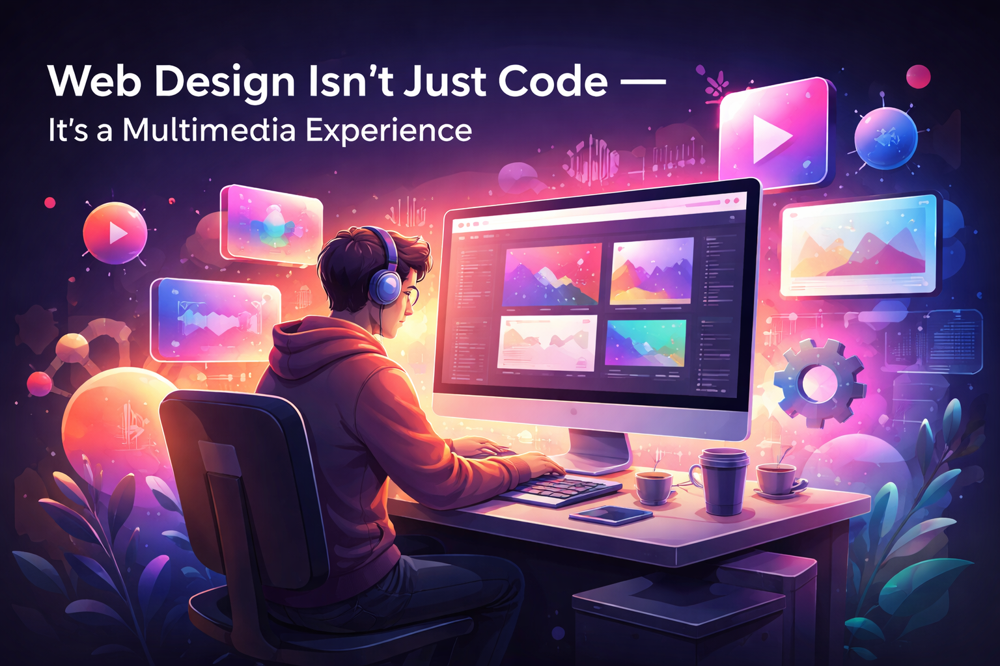

2025
Multimedia Images: Types, Uses and Importance
This article explains the different types of multimedia images, their uses in web design, and why they are important in modern digital experiences.
✍️ My Articles
I write about web development, multimedia, and design on Medium.
2025
This article explains the different types of multimedia images, their uses in web design, and why they are important in modern digital experiences.

Web Design2025
This article explores how modern web design goes beyond writing code and becomes a full multimedia experience combining visuals, sound, and interaction.